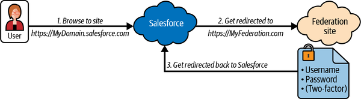
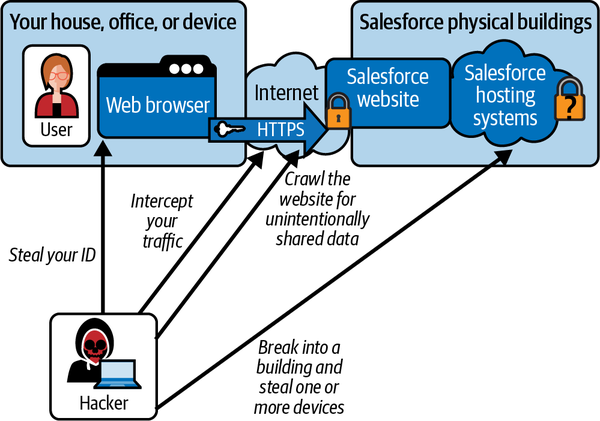
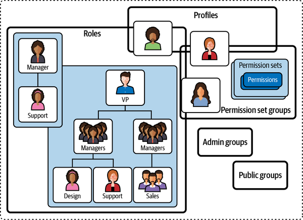
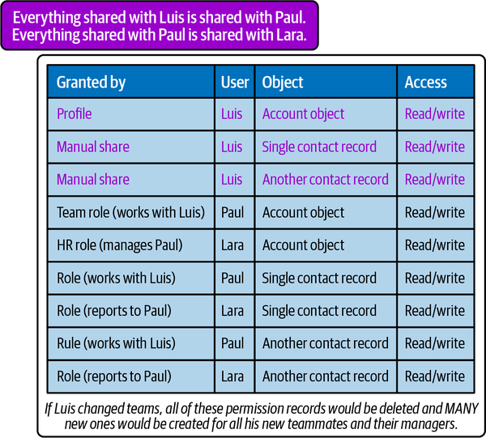

Working in a very complex cloud environment with a very flexible platform requires a lot of focus on security design and maintenance. Much of Salesforce’s success is based on how easy it is to share information with teammates and coworkers. The myriad ways you can configure permissions provide lots of utility for users and developers. However, there are at least three different areas you should continuously monitor to guard against oversharing and unnecessary exposure. We’re going to cover three security paradigms here, with the important observation that these three patterns interact and that “effective” permissions are the sum of the permissions the same user or role has on each system. We’ll also be discussing the internal mechanisms for handling permissions in Salesforce, and some common misconceptions that arise from not fully appreciating some of the ways permissions work.
Salesforce security concept #1: Just because you cannot see a piece of data does not mean you cannot access it. There are native web services and pages that exist by default that can show you any data that you have been granted access to. It is a common security hole that objects and data are created and manipulated by automation in a way that is not intended to be seen by the user. A common misstep is to overshare data when trying to enable anonymous (unauthenticated) access on Experience Cloud sites (Communities). Flows and other visual tools that require read access to a record by a hidden query are accessing public data. Just because you don’t display a record doesn’t ensure that a permission is not exposing all records to all visitors.
Salesforce supports single sign-on (SSO), which allows users to authenticate securely with multiple applications using one set of credentials, and it can be accessed using any modern federated identity system (Azure Active Directory, Okta, Ping, etc.). Salesforce can also act as a federated identity provider for other systems. This means that you can use your company’s current computer or identity system to log in to Salesforce, with no additional password to remember. For security mavens, it also means that you can deactivate identities in your central system and they will be unable to log in to Salesforce thereafter. The federation setup for the Salesforce platform is very polished. Any engineer that knows their way around a certificate can configure an identity provider in a few minutes. The configuration screens also have a handy OAuth debug feature that makes troubleshooting minor issues simple.
The acronym SSO has a few flavors. There’s single sign-on, and then there’s same sign-on. The terms are often conflated. The difference is that with single sign-on, once you authenticate and have an active session, you don’t have to authenticate again. The session is detected from your browser or device and there’s no password challenge. With same sign-on, you get a password challenge on different systems and have to give your username and password multiple times, but it’s the same password (plus two-factor authentication, if required) each time.
Figure 7-1 gives an introduction to federated identity, which enables SSO to applications across domains or organizations. First, the Salesforce website/application communicates behind the scenes with another identity provider to share the responsibility of authentication. When you go to your Salesforce URL, you are redirected to your identity provider’s website. You provide your credentials, and a session token cookie is added to your browser or device session. When you are directed back to Salesforce, Salesforce calls back to the identity provider and validates your token. Your token also carries an “assertion” of your identity from the provider that Salesforce uses to match you to a corresponding Salesforce user account (if one exists). The assertion and cookie are encrypted with tokens provided in the setup process. Encryption uses certificates, and certificates require regular renewal. It is very important to make sure your security team assumes oversight of this area.

Each sandbox where you want to use SSO will require its own certificate(s) as part of the federation setup. These certificates are included in the XML files used to do most setups, so you are never really handling a certificate on its own; it’s part of the bundle. But if the certificates expire, the error messages can be less than obvious to administrators and users. It’s best to have a reminder set to renew them before they cause problems.
Identity management (IDM) is a holistic practice centered around managing authentication and authorization across multiple applications. Federated identity is just one piece of the process. Managing authorization (what an authenticated user can do, access, or see) is an entirely different challenge. Security Authentication Markup Language 2.0 (SAML 2.0) is currently the most widely accepted standard for cross-domain authentication. There’s still not a widely accepted standard for permissions and authorization, but the top-tier IDM providers are fluent with the container structures for permissions within Salesforce.
Breaking it down, within Salesforce you can create different structures of users and add users to them. You can also build structures of different types of “permissibles” (I’m not sure this is used as a noun outside the vernacular of my security architect friends!). A permissible is a unit of a permission that makes up an ability to do something. For example, the permission to “fix my car” might require the permissables of “enter my garage,” “turn on my garage light,” “open my car’s hood,” “work on my engine,” “work on my alternator,” “work on my spark plugs,” and “use my tools.” Each of these unique abilities might be configured in different places, but alone they don’t make much sense. Also, you wouldn’t want to fill out a form with or manage individual permission quanta; you’d want to address them at the level where a user would have some context about their function. While you’re making it easy for the user to understand, don’t forget to include some consideration of granularity. An appropriate appreciation of security boundary interactions would dictate simplifying the previous list to “enter my garage,” “use my tools,” and “work on anything in my car.” A good pattern is to group the functionality that you are intending to enable by how sensitive the information is. If the sensitivity of any element in the group changes, review all of the components. We will go into more detail about the internal component structures later in this chapter. The main takeaway here is that there are multiple permission concepts in Salesforce. Your IDM tools will need to manage a connection and insert, update, or delete users and permissions.
I see a fair amount of confusion around encryption on cloud platforms, and Salesforce is no exception. In Salesforce, all internet-facing endpoints use at least HTTPS encryption. Certificates and cryptography protect all channels into your Salesforce data. When integrating with Salesforce, you should make sure that every link in your data chain is encrypted. That is to say, you should secure every exposed piece of communication.
In addition to all of the inbound and outbound channels being covered, Salesforce offers column-level encryption for specific fields. Additional levels of security and file encryption should only be added to mitigate physical attacks on the hardware. For example, transparent data encryption (TDE) ensures that authorized users and applications can access the data as needed, but that if the servers or the files containing the data are stolen it won’t be easily readable. Adding column-level encryption is similar to TDE in that the data is encrypted at the filesystem level but is decrypted whenever an authorized request is received.
Figure 7-2 illustrates the types of data that can be exposed and the locations that are most often the source of those exposures. You can see that some of the exposures involve a breach of physical locations that are not reasonably vulnerable in most cases. There are definitely some cases where every type of precaution is warranted, but make sure you understand all the potential risks and penalties as well as the benefits of securing each layer before you add them to your designs.

As discussed in Chapter 4, Salesforce IDs may look like random GUIDs, but they are not. They are a combination of well-known codes that refer to objects (which are the same across every Salesforce customer) and some Base64-encoded autonumber values. Base64 encoding is reversible, and having access to a single URL can potentially give someone enough information to easily and almost invisibly read all of the records in a table. “Invisible” here means that a much less suspicious load is generated, since valid URLs can be guessed without guessing many wrong URLs. So don’t see that URL string that looks random and assume that’s any sort of hardening. It’s the opposite.
Figure 7-3 illustrates the different permission container concepts in Salesforce. For simplicity, I’m grouping these concepts to represent any situation where there is a clear set of users paired with some sort of access. In other contexts they are called access control lists. Some of the containers are direct person-to-resource structures, others are hierarchical, and some are extended further as container-to-container-to-container structures.

We go into more detail in the following subsections, but it is important to understand that they all play off of each other.
Profiles are the original permission containers for Salesforce. Profiles came into being when the platform was really just a sales application. Salesforce has grown the concept to try and fit modern models, but they’re a little rigid owing to their simple start. Profiles enable five primary pieces of user access control: license use, feature use, object (table) access, login class, and system admin access. They’re the first tier of access control within Salesforce, and they’re a bit of a blunt tool. The biggest drawback of the profile is that users can only be assigned to a single profile. Profiles show their age when trying to provision users with varying access levels across different application functionality built into the platform.
Each profile has to be assigned to a license available on your instance per your Salesforce contract agreement. For instance, you might have purchased 100 platform (basic) user licenses and 20 enhanced licenses (e.g., Service Cloud licenses). Each user you create will need to be assigned to a profile, and each profile is assigned to a license type. Once you’ve assigned profiles to all of your available licenses, you cannot assign any more, so managing and reassigning licenses to active users can be a regular exercise.
Features purchased in addition to the standard platform license, like Service Cloud or Knowledge, are also enabled via profile settings. The more features you purchase or that are included in the platform for free, the more checkboxes there are to manage inside each profile.
Object access control is another major role of the profile. Each object is listed for enablement in the profile settings at the Create, Read, Edit, Delete (CRED, a.k.a. CRUD) level only. Remember, an object is an entire table, not just a single record. As you build more applications in Salesforce, one of the key patterns is reusing objects to hold more than just one type of data. You might want a user to have read access to Accounts of type X, have read/write access to Accounts of type Y, and have no access to Accounts of type Z; this cannot be fully implemented exclusively with profiles. There are more granular permission structures within Salesforce that can also enable object access, but while you can use these other structures to provide narrower access to data, you can’t use them to narrow access to an object to which a user has already been granted profile-level access. This means that any well-planned permission structure can be undone by an errant grant.
Profiles control certain security concepts as well that I’ll refer to collectively as the login class. The powerful system administrator role is granted inside of the profile. You need to manage your count of system administrators with your overall Salesforce licensing. For other types of users, profiles let you control access nuances like IP range and login hour restrictions. Users with these restrictions can authenticate but be denied access if they are coming from an unapproved network or geographic location. Login hours additionally restrict logins to certain times of the day or weekend when approved users are permitted to access the system.
While profiles served with distinction in the past, complex application platform usage has outgrown them. Profiles are a necessary licensing and administrative control feature, but the fine-grained permission controls they provide are clunky. Hopefully profiles will continue to shed fine-grained functions in deference to permission set groups (which we’ll discuss shortly). Ongoing practice should be to make the profiles as generic as possible, separating users by license type and login class, then use other structures to control data access and permissioning.
Roles is another term that has a few connotations within the Salesforce platform, one of which is specific to permissions and security structures. Roles do not map to the R in RBAC (role-based access control). Rather, roles in the context of Salesforce security and permissions are used to define small-scale, low-depth user hierarchies that share certain data or records. Examples would be manager, direct report, and peer. That mini-tree has three branches that are what Salesforce calls roles. Your position in a role hierarchy is your role.
Behind the scenes, roles are a complex waterfall structure viewed through a simple UI. Role hierarchies should be used sparingly, and only where ensuring inheritance or record access “survival” is vital. There’s no need to mirror the company’s entire org chart in role hierarchies; they should host only the parts of the structure that are absolutely key to managing data that is in Salesforce. Roles shouldn’t be used to acknowledge status changes or promotions, but only to indicate the level of data access that a user or group of users requires. They should only be reassigned when a change in access is absolutely necessary. Individuals at different levels in the org chart can and often do share the same role. In fact, you might only need two roles that appear at the same tier: say, one for VPs to share purchase approvals and a second top-tier branch for phone agents to share case notes. If there’s no reason to nest those groups within each other, don’t do it. This minimizes the backend waterfall effects caused by changes to either group.
Figure 7-4 is a simple example to help you visualize how quickly a role change can amplify, causing many sharing records to be created and deleted. At a large scale, sharing recalculation can harm performance, slowing down your instance.

The permissions structure in Salesforce is the one that you will want to focus most on. It aligns to more traditional application permission strategies, which means better interoperability with mature identity and access management (IAM) systems. Being able to easily map a Salesforce permission to an external approval and review process is key. If you were using profiles, your permission “handles” would be paired to licensing and not actual system permissions.
Permission sets are collections of permissions and settings that determine access to tools, functions, services, and resources provided by the Salesforce platform. Permission set groups are a fairly recent security model that enables different permission sets to be grouped together so that they can be easily assigned to certain users. Not all IAM systems support permission set groups, but as their use increases, the integrations will follow.
From an EA perspective, you don’t need to know much detail about these concepts except that they are different from and more extensible than profiles and roles. Salesforce makes it easy to roll out that first application, but some extra time is needed to build a good security- and compliance-friendly permission model that can grow with you. Look to your other employee systems to find which existing models or persona/role definitions should be mirrored by your Salesforce implementation. It should be very rare to onboard an application/function that serves a completely new group of users. Building a shared model decreases training time and data leak potential.
The previous sections described the primary strategies for creating and maintaining security containers in the UI. There are also record-by-record means to grant access. Users with certain permissions can decide to share them with other users in the system. These permissions don’t survive if that user loses access to those records, though, and the permission to grant permissions to others can be controlled if desired. Developers can also grant access directly to individual records without adhering to the visible structures created in the UI.
Behind the scenes, there are two ways to determine who has permission to see a record: precalculated and just-in-time (JIT). With precalculated permissions, there is a sharing record directly attached to the record you want to see that says you are allowed to see it. For precalculation to work, the permissions of all users needs to be recalculated when any change that affects user access is made. That change triggers the deletion and re-creation of the sharing records attached to the affected object records. With JIT permissions, when you try to access an object, another system (or multiple systems) is consulted to see if you should be given access. Essentially, they’re both doing the same thing, except for the additional latency and layers required to determine whether to approve your access query with JIT permissions (versus the instant answer you get with precalculated permissions).
While it can be necessary and/or quicker to use programmatic or ad hoc sharing, you must invest the time to properly document your off-the-map data sharing structures. It’s not easy to review and troubleshoot security model problems, even with expensive scanning tools. Salesforce administrators and programmers are also very seldom in charge of holistic data security patterns, so do your best to make it easy for those who are.
All of the preceding information set the stage for the concept of effective permissions. Since each permission is additive, effective permissions are the matrix product of all of the previously discussed permission-granting systems added together. Since profiles, roles, groups, teams, and permission set groups are not exclusive, combinatorics come into play. The flexibility of different permission structures leads to complexity when they overlap (Figure 7-3 shows some of the ways that this can happen). If you are trying to manage permissions with an RBAC or IAM system, the permutations of groups multiplied by groups can lead to potential oversharing.
From the user up, the premise is simple: the user’s access is the sum of the access of all the groups they are a member of. Trying to manage it by role/group means that every area of overlap is effectively another role/group to manage. There is a new breed of tools that can help you analyze this space, but bear in mind that it’s best to have a very good holistic security model in place before you take on any major project with any sort of sensitive data.
The Salesforce core platform allows for extremely granular control of what data is shared and with whom. Builders and administrators have access to a variety of sharing and restriction patterns to use to properly share information and work. Most of the containers for users are easy to understand and expose to an IDM system. The platform is also very easy to integrate into all major federated identity systems for SSO. Most of the other aspects that need to be surveyed regularly are easily exposed to tools specific to the task.
The security framework started strong in Salesforce, and the ecosystem seems to be growing to match the threat landscape. We should see more tools like Shield’s Einstein Data Detect (EDD) grow to use AI to intelligently monitor data for potential problems. EDD is specific to Salesforce, but this flavor of DLP is not. We need more systems capable of doing this across different platform stacks as part of a holistic strategy. Some of the titans in the DLP, SaaS security posture management (SSPM), and cloud access security broker (CASB) space are starting to include Salesforce monitoring in their offerings.
The overwhelming flexibility of Salesforce is the only thing to worry about. “Effective permissions” review and management will be a big part of conscientious IT professionals’ work, across many job functions. Salesforce brings more than the usual share of complexity to manage for a single application—even more than for the average application platform. Plus, it is growing. Here we are only talking about the core platform. The other acquisitions and platforms also have their own security paradigms that don’t necessarily align to the core permission structures described here. Security-focused architects will need to carefully plan the approved methods of granting access. Keeping those plans visible and manageable by security and compliance teams will require good investment in architects and communication.
Iterative design is another pattern that can cause trouble in heavily customized organizations. The first planned iteration should spend time documenting the entire near- and long-term pattern for permissions and security. Unfortunately, the available tools for visualizing and managing all the different ways to provide access to functions and information within the platform are currently immature. There are literally dozens of places to check to understand where information can go. Gaining awareness of the entire permission-scape can challenge even the most apt Salesforce architects. Sharing these concepts with InfoSec professionals can be even more challenging. Cooperation and understanding the unfamiliar and overlapping security structures is key to maintaining a secure platform.
There’s another product/service you can add to your environment, called Salesforce Shield (thankfully, it isn’t called the Security Cloud… yet). The security and compliance features of this product are growing every year. There are also many third-party scanning and mitigation tools that are maturing rapidly in the same space. Leveraging all of these tools is becoming table stakes for any large company or companies that value their data security. Look for this space to continue to rapidly evolve along with Salesforce and its close integrations and acquisitions. Application builders and developers are not necessarily skilled at both the fastest way to get something done and the most secure way to get something done. Fortunately, toolsets that can help mitigate this are maturing and becoming more widely available.
The popularity and ubiquity of Salesforce have made it a favored target for hackers. There are many popular scripts designed to easily start scanning a Salesforce org for exposed information. Customization and even basic administration of Salesforce can lead to accidentally oversharing information that hackers can find. This might not be a worry for small organizations without confidential information at their core. Salesforce applications can be quickly built and secured provided they use only a few permission concepts. Once you move beyond those first simple applications, however, you should carefully plan your security strategy and create checkpoints to confirm that strategy stays intact.